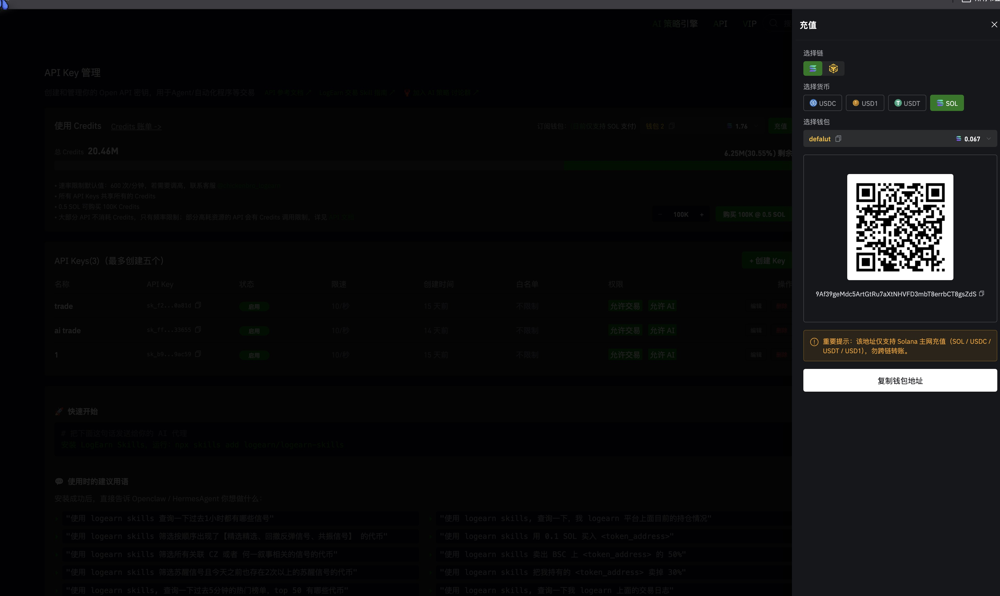
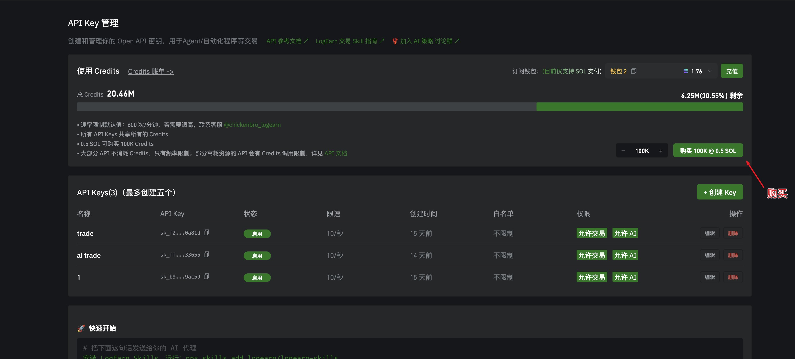
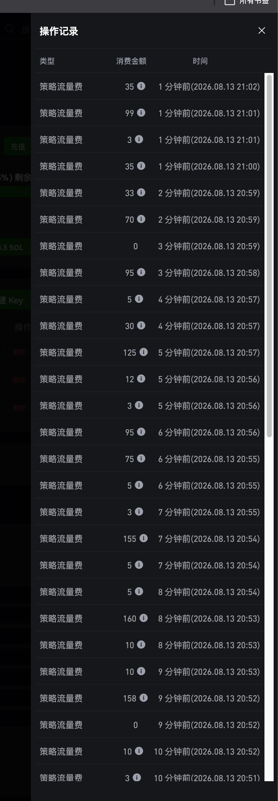
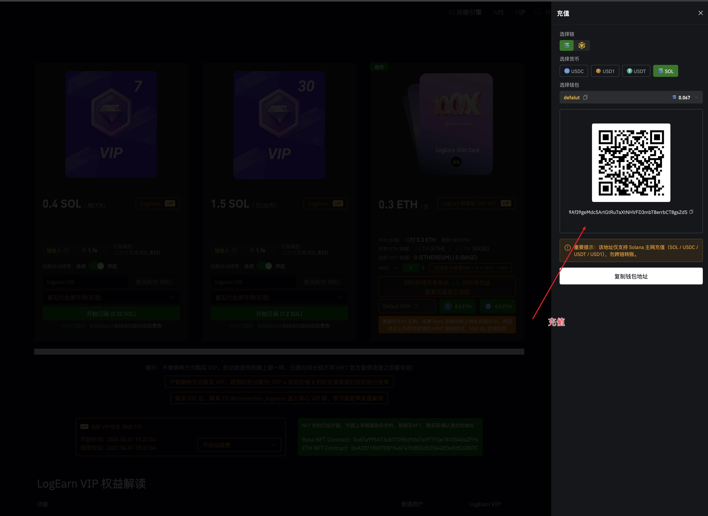
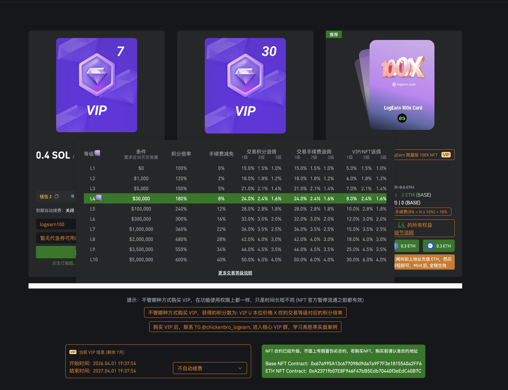
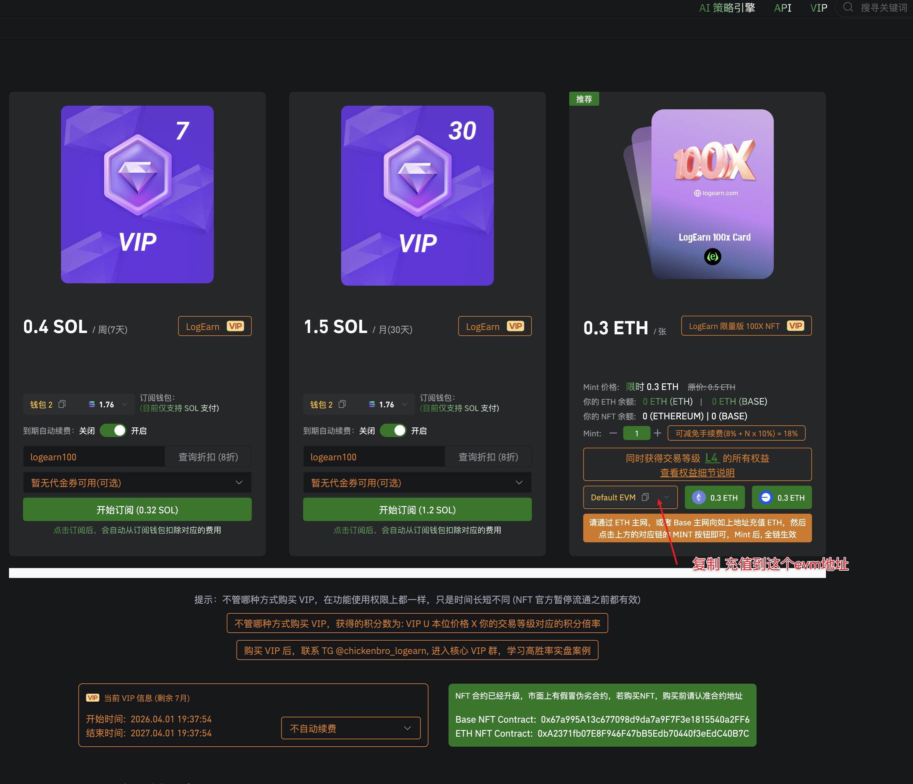
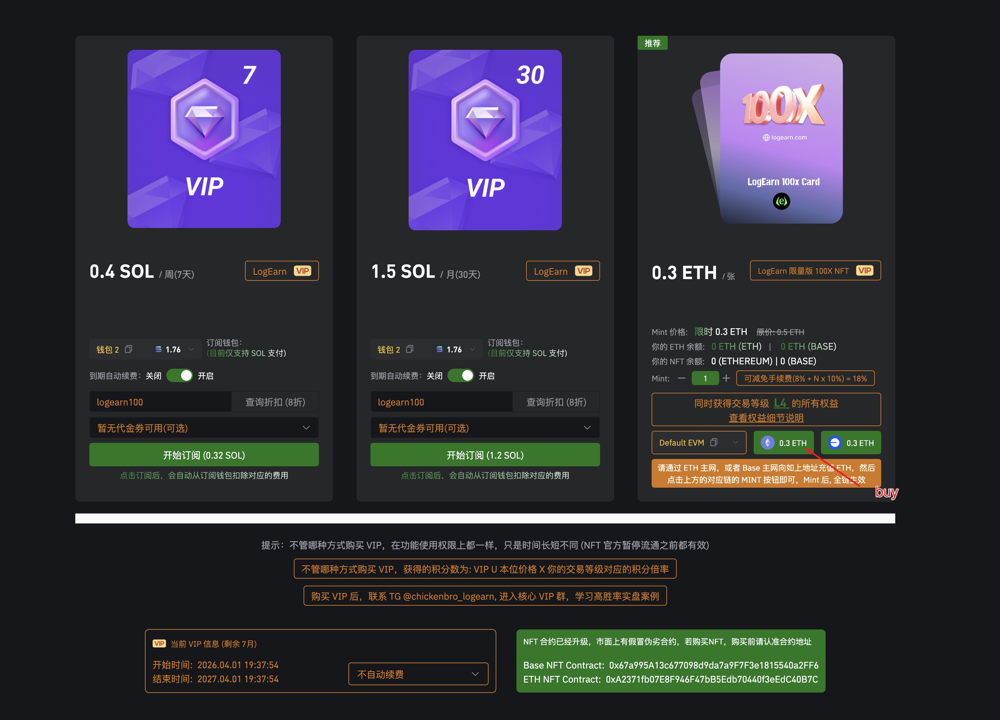
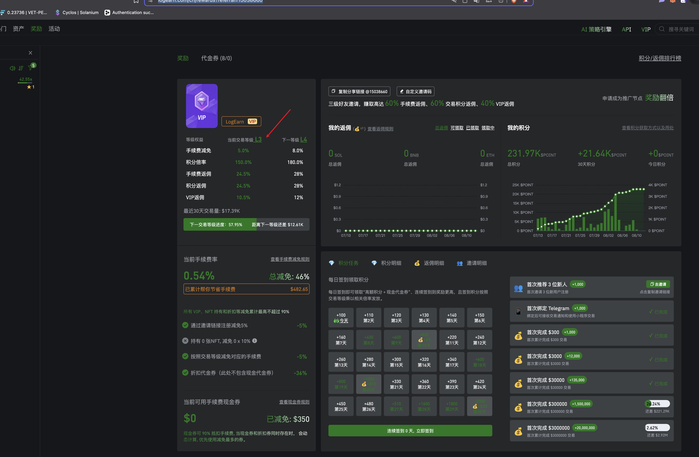
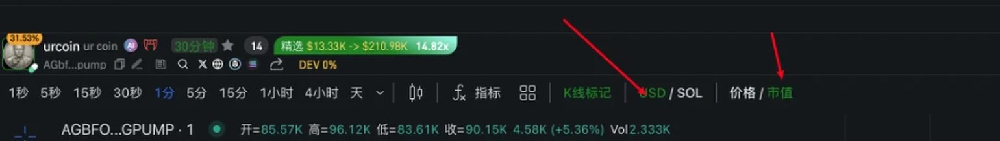
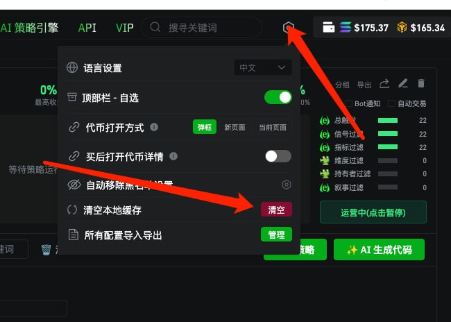

Credits 是 AI 策略引擎的流量费,在「API Key 管理」页的使用 Credits 面板里买,分两步。
第一步:充值。面板右上角点 充值,选 Solana 链 + SOL,往弹出的钱包地址转 0.5 SOL。注意提示:该地址仅支持 Solana 主网充值,勿跨链转账。

充值弹窗:选链、选 SOL,往二维码下面的地址转账。
第二步:购买。到账后,点面板右侧的 购买 100K @ 0.5 SOL,0.5 SOL 买入 100K Credits。

红箭头指的绿色按钮就是购买入口,左边可以调数量。
100K 够用多久?点面板左上的 Credits 账单 能看逐笔消费记录(策略流量费)。按实际消耗估算:单开 1.5 段策略,100K 大约能用 4 天;单开苏醒策略大约 5 天。多开策略按比例缩短,快用完了记得提前买。

消费账单:每笔都是策略流量费,金额几到一百多 Credits 不等。
VIP 页(顶栏 VIP)有两条路:周卡 / 月卡用 SOL 订阅,100X NFT 用 ETH 买断。功能权限都一样,只是时间长短不同。
第一步:充值。点 充值,选 Solana 链 + SOL,往钱包地址转账。该地址仅支持 Solana 主网充值,勿跨链转账。

充值弹窗,红箭头指的就是充值地址。
第二步:选周卡或月卡。周卡 0.4 SOL / 7 天,月卡 1.5 SOL / 30 天。折扣码填 logearn100 可以打 8 折(周卡 0.32 SOL、月卡 1.2 SOL),点「开始订阅」自动从订阅钱包扣费。

左边周卡、中间月卡,折扣码输入框里填 logearn100。
另一条路:100X NFT(推荐)。0.3 ETH 一张,买了直接获得 L4 交易等级的所有权益。步骤:
1. 充值弹窗切到 EVM,复制 Default EVM 地址,通过 ETH 主网或 Base 链往这个地址充 0.31 ETH(0.3 之外留点 gas)。

红箭头位置:复制这个 EVM 地址,选 ETH 或 Base 链充值。
2. 到账后点对应链的 0.3 ETH MINT 按钮买入,半小时内会自动买入,Mint 后全链生效。

右下角对应链的 0.3 ETH 按钮就是买入入口。
3. 买完到「奖励」页看等级权益,交易等级就会显示 L4:手续费减免 8%、积分倍率 180%。

等级权益面板,买完 NFT 这里显示 L4。
购买 VIP 后,联系 TG @chickenbro_logearn 进核心 VIP 群。注意:市面上有假冒合约,买 NFT 前认准官方合约地址(VIP 页底部有列)。
先检查顶部那两个显示开关。筹码分布只支持 USD + 市值 这一种组合,切到 SOL 计价或者 价格 口径,K 线、筹码峰、指标都可能跟着出问题。
开关在时间周期那一行的右边:USD / SOL 和 价格 / 市值。遇到异常,先把它们切回 USD 和 市值,大多数情况就正常了。

红框位置就是 USD / SOL 和 价格 / 市值 切换开关。
大概率是点到了右下角的 log。切成对数坐标之后,K 线会显示异常,右侧的筹码峰会直接消失。
log 在图表右下角、时间戳的右边,挨着 % 和 自动。再点一次取消掉就回来了。
这个按钮很容易在缩放图表的时候误触,筹码峰一没就先往这儿看。
看一下是不是动到了标头右边的三个点。K 线和每个指标的标头(比如「成交量(Volume) WMA 1」)后面都有一个 ⋯ 菜单,里面这两项都会把图搞乱:
「隐藏」和「移除」在菜单里是挨着的,手一抖很容易点成下面那个。菜单里的「对象树…」可以列出图表上当前有哪些对象,东西找不到的时候从这儿查。
没把握的话,别在这个菜单里乱点 —— 改显示口径用顶部那一排,不用动标头。
终极解决方案:清空本地缓存。K 线和指标的显示状态都存在浏览器本地,缓存脏了怎么切开关都救不回来,清掉重新加载就好了。
入口在顶栏右侧的齿轮图标(设置):点开后找到「清空本地缓存」,点右边红色的 清空 按钮,然后刷新页面。

顶栏齿轮 → 清空本地缓存 → 清空,两个红箭头指的位置。
早期精选、苏醒信号、回调后反弹信号、我关注的钱包、蓝筹顶级赢家钱包共振、X(推特)车头。
六种可以全开,也可以只留一种。只留一种的时候,信号列表就变成了那一类信号的专属看板。
点顶部的「信号类型」下拉,把其余五项的勾去掉,只留你要的那一种。下拉右边的数字会跟着变,比如只留一种就显示 1。
完整图文步骤见 六大信号自定义筛选 →
一个管频次,一个管新鲜度,要一起用才有意义。
早期精选次数(24H) 填最小值 —— 24 小时内被选中过几次,次数越多说明关注度越持续。最新精选距今时长(分) 填最大值 —— 最近一次被选中距现在多久,填 60 就是只看一小时内的。只卡次数不卡时长,会翻出一堆昨天热过、现在已经凉了的币。
两步:信号类型保持六项全选,然后点列表右上角的排序图标,在「按代币排序」里选 24小时热度。
这就是社群里常说的热门榜 —— 不挑信号类型,只看当下整体最热的币。
是这个标签页下面已经设了几条条件,不是筛出了几个币。很多人第一次看会理解反。
比如战壕看板「已迁移」显示 5,拆开就是:发射平台 1 条 + 特色指标 2 条 + 普通指标 2 条。填完之后对一下这几个数字,就知道有没有漏填。
战壕的三个阶段(新创建 / 即将迁移 / 已迁移)各算各的,互不影响。
单位是分钟,填在「最大值」那一栏。常用两档:
1440 = 24 小时 —— 只看当天的币,二段看板用这个。500 ≈ 8 小时 —— 只看刚起来的,战壕看板用这个。能。过滤弹窗底部有「模板」「导入」「导出」和「保存」。「确认」是这次生效,「保存」是存成模板下次直接调。
配好一套之后建议先保存,不然换个看板回来又得重填一遍。
参数不是死的,按这个方向调:
建议先照教程里的默认值跑一天,有了手感再按自己的节奏微调。
这是个硬指标。真正的金狗大多数都在 1% 以下,超过 5% 基本可以直接跳过,不用再去看图。
教程里给的两个值是留了余量的:二段信号看板收到 5,战壕看板放到 10 —— 战壕阶段盘子还没洗干净,标准放宽一点,但也就到这儿。
不一定。刚发的币新钱包本来就多,单看这一项没法下结论。
它是软门槛:超过 70% 就要警惕,容易是一群小号开的阴谋盘。但必须配合垃圾钱包持仓一起看才准 —— 新钱包高、垃圾钱包低,可能只是币新;两个都高,才是要躲的。
代币详情页右侧「特色指标」里,是这个币的持仓结构拆分:高频钱包、新钱包、老钱包、蓝筹顶级赢家钱包、聪明(资金)钱包、垃圾钱包、AMM 钱包、交易所钱包。
这几个数字是判断盘子干不干净的核心依据,过滤弹窗的「特色指标」标签页筛的就是它们。
都在代币详情页最底一行的全局入口里:自选、信号、热门、监控、仓位、战壕、AI 策略。点「信号」开信号看板,点「战壕」开战壕看板,不用退回首页。
页面各区域的说明见 代币详情页布局 →
因为筛的东西不同,别拿一套去套另一套。
两边共用的是发射平台、特色指标、普通指标这几块。
按代币的生命周期切的三段: